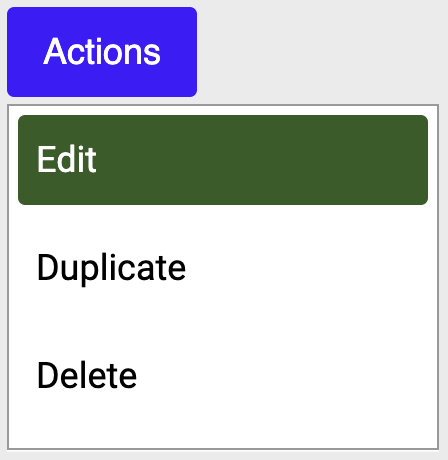

A dropdown menu
Imagine an interface where a control opens a popup that contains actions such as Edit, Duplicate or Delete.
Sighted users can see that the control opens a menu and can immediately understand the type of content that has appeared. In the example below, the control triggers a dropdown menu with three options.

But how can we tell screen reader users that the control opens a popup, and what type of popup will appear?
This is where aria-haspopup can help.
aria-haspopup tells assistive technologies that the control opens a popup, and what type of popup it is.
In some cases, HTML already provides a native solution. For example, a <select> element provides a list of options without needing aria-haspopup.
For popup menus, trees, and grids, there is no native HTML equivalent. Dialogs are a partial exception because HTML provides the <dialog> element, which gives the dialog its own role and behaviour once it opens.
But the button that opens the dialog is still just a button. It doesn't tell assistive technologies in advance that a dialog will appear, so aria-haspopup="dialog" can still be useful.
On the control
aria-haspopup is added to the control that opens the popup, not the popup itself.
It gives screen reader users useful information before they activate the control.
The popup still needs its own role and behaviour once it opens. The aria-haspopup value should match that role. For example, if you use aria-haspopup="tree", the popup should have role="tree".
It takes one of seven values.
false
The default. The control does not have a popup. Most buttons never need to state this explicitly, it's what's already assumed.
<button aria-haspopup="false">Plain button</button>true (alias for menu)
Treated the same as menu. It means the popup is a menu.
<button aria-haspopup="true">
Options
</button>View true example on the testing page
menu
Opens a set of actions or commands, such as Save, Rename or Delete. Items use role="menuitem", or menuitemcheckbox and menuitemradio when an item also has its own selected state.
Choosing an item performs an action rather than changing the button's value, so the button's label usually stays the same.
<button aria-haspopup="menu">
Actions
</button>View menu example on the testing page
listbox
Opens a flat list of choices, similar to the options in a native <select> element. Items use role="option", with aria-selected showing which options are selected.
A listbox can allow one or more selections. When used as a value picker, the trigger usually updates to show the current selection.
<button aria-haspopup="listbox">
Sort by: Newest
</button>View listbox example on the testing page
tree
Opens a hierarchical set of choices, such as categories with sub-categories or folders containing files. Items use role="treeitem". If an item can expand, its child items are placed inside a nested role="group".
aria-haspopup="tree" is only used when the tree appears as a popup from a trigger.
Many trees, such as a file browser sidebar or site navigation, are always visible. These do not use aria-haspopup.
<button aria-haspopup="tree">
Browse categories
</button>View tree example on the testing page
grid
Opens a two-dimensional structure with rows and columns, rather than a simple list. A date picker is a common example.
<button aria-haspopup="grid">
Choose a date
</button>View grid example on the testing page
dialog
Opens a dialog, often for a confirmation or short form. The native <dialog> element handles the dialog itself once it opens, but aria-haspopup="dialog" on the trigger tells assistive technologies in advance that a dialog will appear.
<button aria-haspopup="dialog">
Delete item
</button>View dialog example on the testing page
What's the difference between menu, listbox and tree?
Of the five popup types, menu, listbox, and tree are the easiest to confuse. They can look very similar: a panel opens and arrow keys are often used to move between items.
The main difference is what the items represent and what happens when you choose one.
A simple way to tell them apart:
menu= perform an actionlistbox= choose a flat valuetree= choose from a hierarchy
Another useful clue is whether the trigger changes afterward.
With a menu, the trigger usually stays the same. “More actions” is still “More actions” after choosing Save or Delete because you performed an action.
With a listbox, the trigger usually updates to show the selected value. “Sort by: Newest” might become “Sort by: Oldest”.
A tree can work the same way when it is used as a picker. But many trees, such as file browser sidebars or site navigation, are always visible and do not use aria-haspopup at all.
Wrapup
aria-haspopup plays an important role in telling assistive technologies that a control opens a popup, and what type it is.